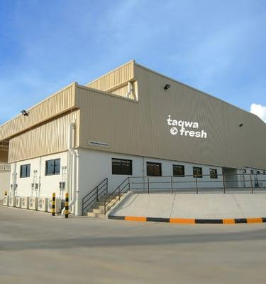
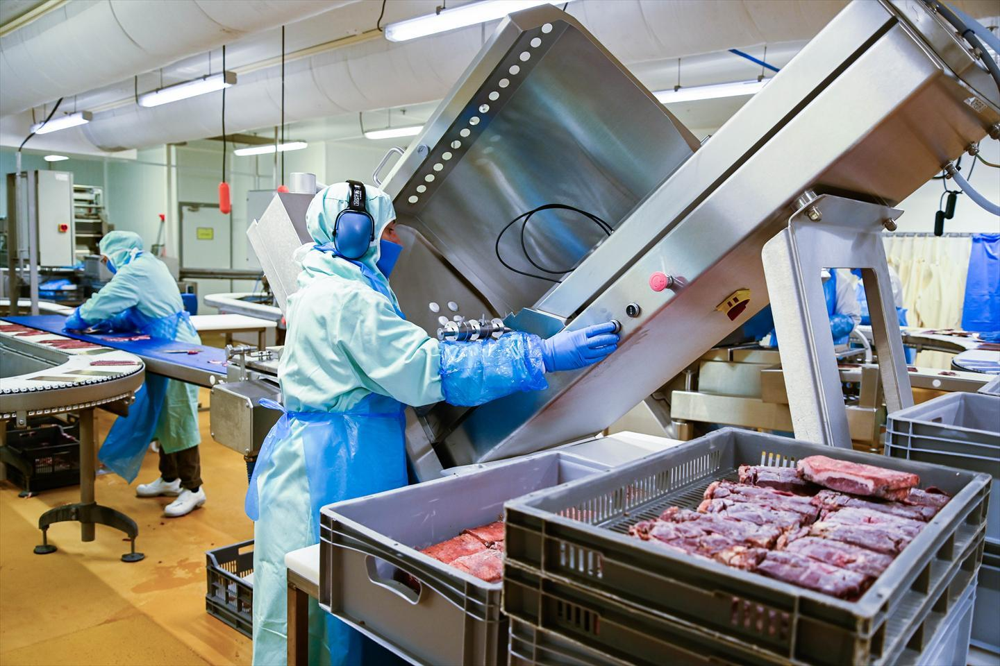
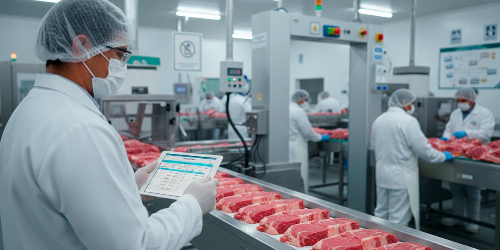
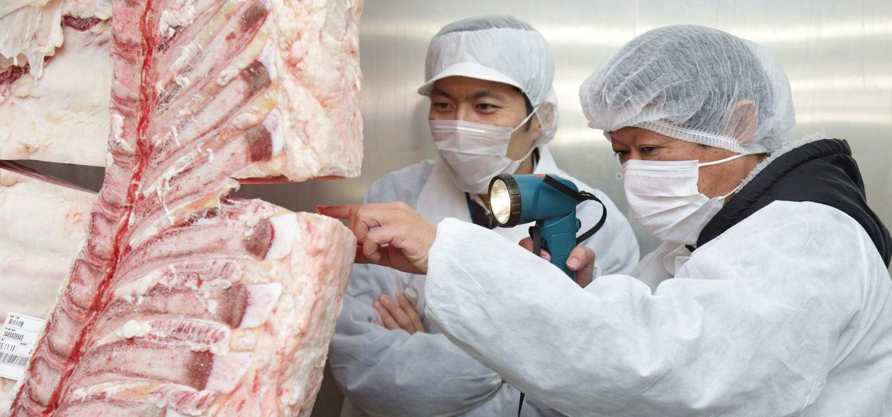
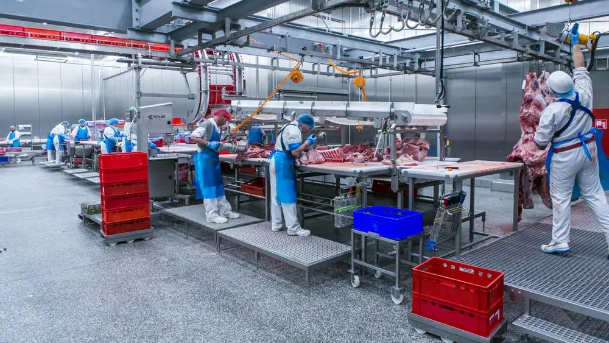

Welcome to Premium Slaughter House
Welcome to Premium Slaughter House, where quality, hygiene, and customer satisfaction are our highest priorities. We are a modern meat processing company dedicated to providing fresh, healthy, and 100% halal meat products to homes, restaurants, hotels, supermarkets, and businesses. Our experienced team follows strict hygiene standards and professional processing methods to ensure every product meets the highest quality expectations. We take pride in building long-term relationships with our customers through honesty, reliability, and exceptional service.

Our Story
Premium Slaughter House was established with the vision of providing safe, hygienic, and premium-quality halal meat products to the community. From the beginning, our goal has been to combine traditional halal practices with modern processing technology to ensure the highest standards of food safety and customer satisfaction. Over the years, we have continuously improved our facilities, equipment, and services to meet the growing needs of our customers while maintaining our commitment to quality and excellence.
Our Mission
Our mission is to deliver safe, healthy, and premium-quality meat while maintaining high standards of hygiene, animal welfare,and customer service.
Our Vision
Our vision is to become one of the leading halal meat processing companies recognized for quality, innovation, and reliability. We strive to expand our services while maintaining the highest standards of hygiene, sustainability, and ethical business practices. Our goal is to be the preferred choice for customers seeking premium halal meat products delivered with professionalism and care.
Our Core Values
The success of Premium Slaughter House is built upon strong values that guide every decision and every service we provide.
- Integrity and Honesty
- 100% Halal Commitment
- Food Safety and Hygiene
- Customer Satisfaction
- Quality Without Compromise
- Teamwork and Professionalism
- Continuous Improvement
- Environmental Responsibility
Modern Facilities
Our facility is equipped with modern slaughtering equipment, hygienic processing areas, advanced cold storage rooms, packaging departments, quality inspection stations, and refrigerated delivery vehicles. These facilities allow us to maintain the freshness, safety, and quality of every product while ensuring efficient and reliable operations.

Why Customers Trust Us
Customers trust Premium Slaughter House because we consistently deliver premium-quality halal meat with complete transparency and professionalism. Our experienced staff, strict hygiene practices, modern equipment, and reliable customer service ensure that every order is handled with care. We believe that trust is earned through consistent quality, honest business practices, and exceptional customer support.
Our Commitment to Sustainability
We believe in responsible business practices that protect both our customers and the environment. Premium Slaughter House works to reduce waste, improve energy efficiency, and maintain clean processing facilities. By following sustainable practices and continuously improving our operations, we contribute to a healthier environment while delivering safe and high-quality meat products.
Get to Know Us Better
We warmly welcome customers, business partners, restaurants, hotels, supermarkets, and distributors to learn more about our services and products. If you have any questions or would like to discuss your requirements, our team is always ready to assist you. We look forward to building a long-lasting relationship based on trust, quality, and excellent customer service.
Quality Standards
Every animal is inspected before processing. Our facility follows strict hygiene procedures, modern equipment, and proper cold-chain storage to maintain freshness and food safety from processing to delivery.


Our Certifications
- Halal Certified
- Food Safety Compliant
- Hygienic Processing Standards
- Licensed Meat Processing Facility
Our Team
Our skilled butchers, quality inspectors, packaging specialists, and customer support staff work together to ensure every customer receives fresh, hygienically processed, and premium-quality halal meat.
